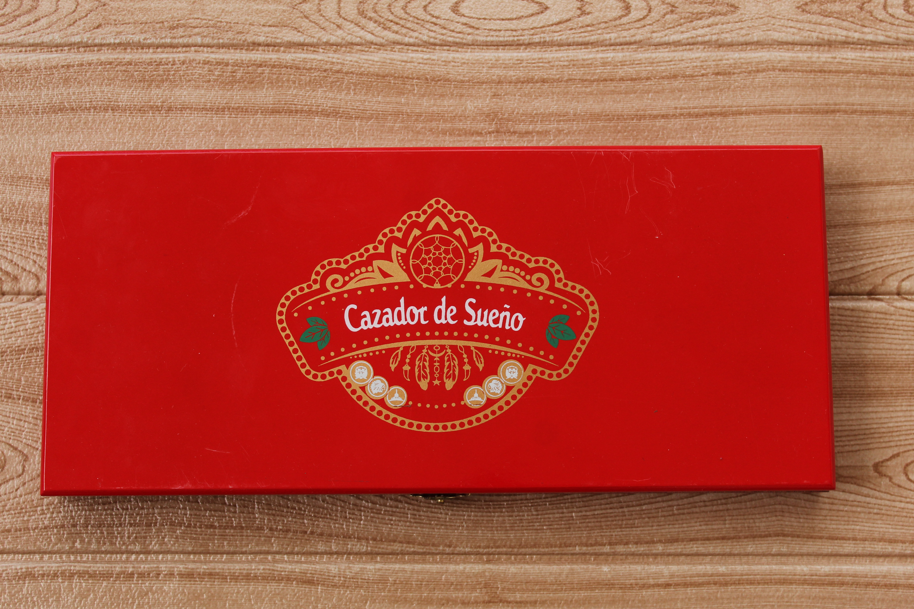
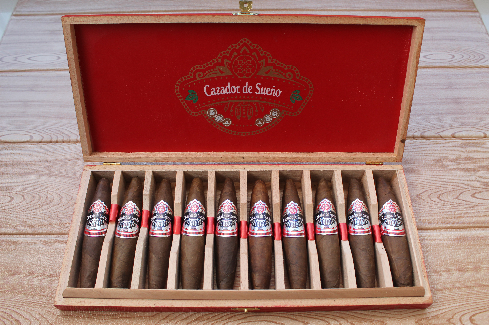

Formato / Vitola
Doble Perfecto 60 × 4½″
Un cigarro figurado, imponente en su cepo pero de longitud corta, ideal para una fumada rica y de gran evolución.
Formato figurado · Maestría en el rolado



Un cigarro espectacular en formato figurado. Complejidad concentrada, combustión impecable y la destreza máxima de nuestros maestros roleros.
Un cigarro de alta artesanía tabacalera. Al ser un formato figurado, representa la destreza máxima de nuestros maestros roleros, logrando una evolución de sabor concentrada y una dinámica de fumada excepcional. Cada vitola es una escultura de humo — corta en longitud, imponente en cepo, infinita en personalidad.
Doble Perfecto 60 × 4½″
Un cigarro figurado, imponente en su cepo pero de longitud corta, ideal para una fumada rica y de gran evolución.
San Andrés
Seleccionada por su excelente textura y el balance perfecto que aporta al perfil.
Selección Premium
Nicaragua — aportando estructura y el carácter característico de sus tierras volcánicas.
100% Nicaragua
Una mezcla equilibrada que resalta la riqueza del tabaco centroamericano.
Medium-Fuerte
Un equilibrio perfecto entre cuerpo, aroma y amabilidad al paladar.
El Rango representa la maestría artesanal en el formato figurado de los puros dominicanos artesanales de Cazador de Sueños Cigars SRL. Este Doble Perfecto 60×4½ con capa San Andrés y 100% tabaco Nicaragua demuestra la alta artesanía dominicana en su máxima expresión, ofreciendo una experiencia única para los aficionados que buscan comprar puros premium online de formato especializado.
La geometría compleja del Doble Perfecto, combinada con la riqueza del tabaco centroamericano y la capa San Andrés, posiciona a El Rango entre los best Dominican cigars más sofisticados disponibles en el mercado internacional. Nuestros handmade luxury cigars de formato figurado son elaborados por maestros tabaqueros que dominan el arte de la vitolas de alta gama compleja.
Este puro artesanal presenta una experiencia de fumada concentrada que evoluciona con la geometría del Doble Perfecto. La pimienta rica y suave como firma revela matices de tierra negra, especias centroamericanas y el dulzor característico del tabaco Nicaragua, creando una sinfonía que cambia con cada tercio, ideal para cigarros finos para coleccionistas que aprecian la complejidad de formato.
Cazador de Sueños Cigars ofrece envíos internacionales seguros de El Rango a los mercados más exclusivos del mundo. Nuestros puros premium de formato figurado están disponibles para compras al por mayor y distribución en:
Trabajamos con tabaquerías premium, lounges de lujo, distribuidores mayoristas y establecimientos de alta categoría en estos mercados, ofreciendo condiciones especiales para pedidos al por mayor y envíos seguros con todas las regulaciones internacionales cumplidas.
Al elegir comprar puros premium online de El Rango con Cazador de Sueños Cigars, obtienes:
La pimienta rica y suave como firma — una sinfonía concentrada que evoluciona con la geometría del Doble Perfecto.
La entrada es sumamente interesante, dictada por la punta estrecha del Doble Perfecto. De inmediato impacta una pimienta suave, rica y muy aromática — precisa, casi floral en su registro — acompañada de notas de madera ligera que preparan el escenario. La combustión se abre con impecable regularidad, testimonio del arte del rolado figurado: cada calada es concentrada, intensa y deliberadamente elegante.
La fumada se ensancha y se vuelve notablemente más cremosa en el centro del cigarro, donde el cepo alcanza su máxima expresión. Despiertan matices terrosos sutiles y frutos secos — almendra, nuez — mientras se asienta esa pimienta elegante que estimula el paladar sin saturarlo. El capote y la tripa nicaragüenses despliegan su balance con precisión de sommelier: estructura volcánica domada por amabilidad y refinamiento.
El cierre es denso, sabroso y sumamente satisfactorio. La fortaleza Medium-Fuerte se mantiene redonda y limpia hasta la última ceniza, dejando un retrogusto persistente a especias dulces, maderas tostadas y esa pimienta característica que define la personalidad de El Rango. Es el desenlace de un formato que condensa en pocos centímetros lo que otros vitolas tardan en revelar — pura maestría concentrada.
Doble Perfecto 60×4½ - Formato Figurado
Consultas privadasEl Rango no se mide en pulgadas: se mide en destreza. Cada figurado es la firma de un maestro rolero que convierte la forma en sabor y la combustión en arte.